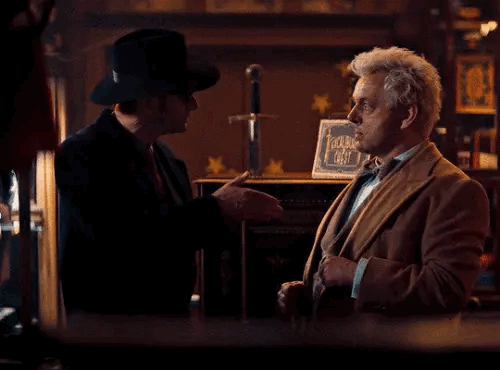
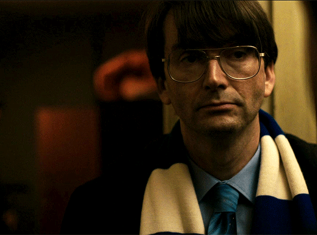
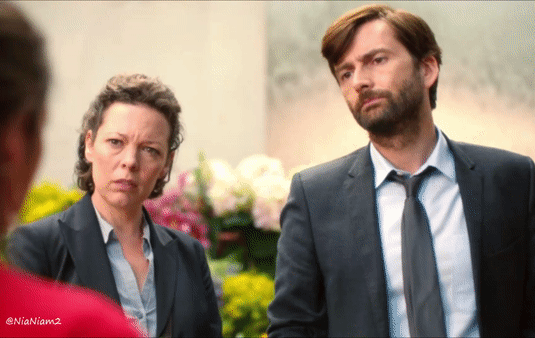

Out of all his brilliant performances, these three hold a special place :)

Role: Crowley
Why it’s a favorite:
I love clever religious satire that still manages to tell a genuinely compelling story with meaningful themes. Beyond its brilliant humor, the show handles LGBTQ+ themes with real care. I deeply identify with Crowley, especially the subtle emotional weight behind 6,000 years of pining and navigating that deep sense of religious guilt. David captures all of that complexity effortlessly.

Role: Dennis Nilsen
Why it’s a favorite:
An absolute masterpiece that deserves so much more recognition. David’s portrayal of serial killer Dennis Nilsen is magnificent, chilling, restrained, and deeply gripping. Combined with incredible storytelling and production, I think it stands out as one of the best true crime miniseries out there, even if it is not as known.

Role: DI Alec Hardy
Why it’s a favorite:
This show is a masterclass in crime drama from start to finish. The story keeps you constantly guessing, and the plot twists hit perfectly right up until the end. David and Olivia Colman have incredible screen chemistry, and Alec Hardy is such a complex, brilliant character who grounds the entire mystery.